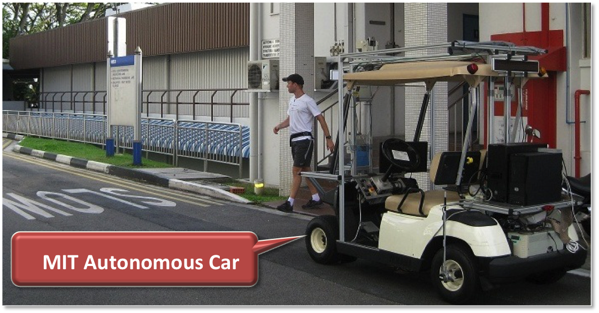

Project CarSpeak: A Content-Centric Network for Autonomous Driving

Self-driving cars are widely seen as the future of the automotive industry. Yet, safety remains a challenge; sensors on autonomous cars cannot look around corners. Communication between cars is a natural, but challenging solution given that vehicular sensors generate Gb/s of data. CarSpeak addresses this challenge with a novel communication system; it adopts a "content-centric" approach where regions of the road sensed in the environment are first class citizens. CarSpeak improves collision avoidance in a real autonomous car testbed.